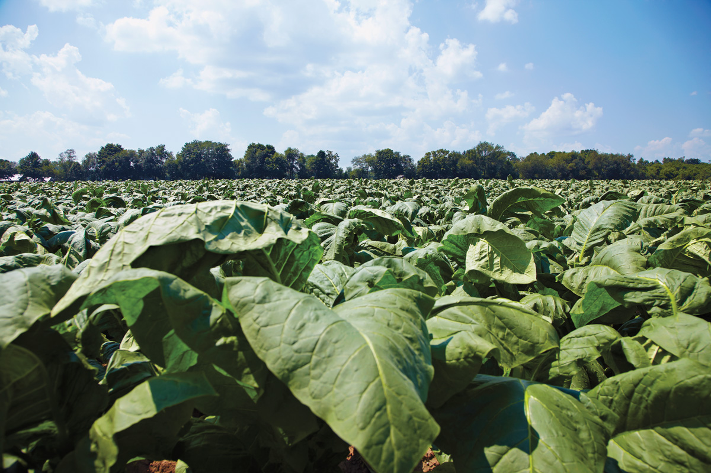
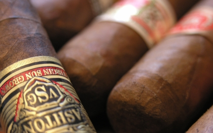
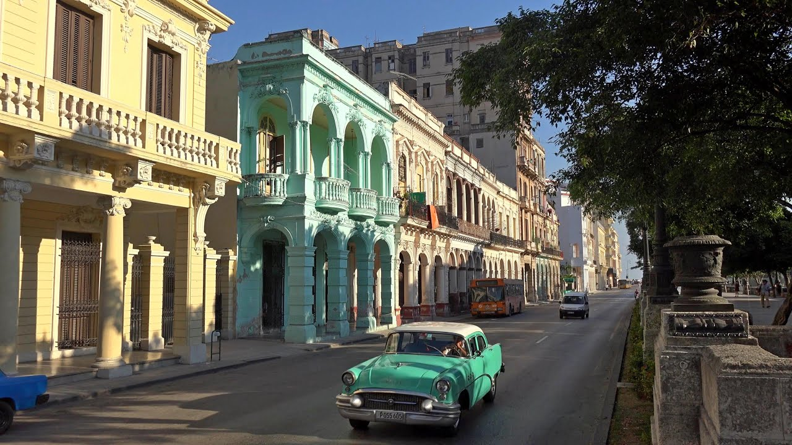
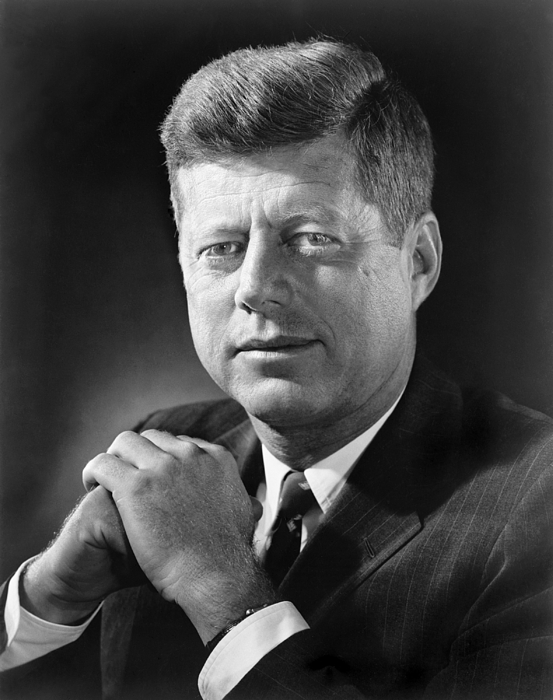
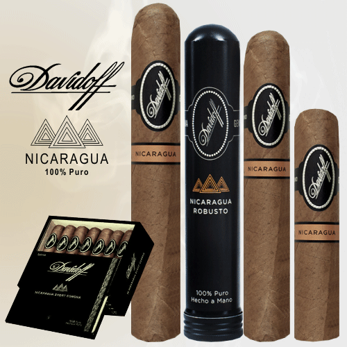

The first cigars were most probably made in North America. The Aztecs and Native Americans were the first to cultivate tobacco and smoke it. Christopher Columbus would eventually travel to America and be introduced to tobacco. Tobacco would then be introduced to Europe.
The cigar as we know it today originated in Spain. The Spanish were the first to create the modern cigar with a wrapper, filler, and binder.
Eventually, it was discovered that Cuba was the best land for growing tobacco. Cuba has a perfect climate and soil to grow the plant. Cuban tobacco has highly sought after properties because of the high lithium content in the soil.
Cuban cigars would go on to dominate the market. The American market would also take up 50% of the market share of Cuban cigars. JFK would eventually enact a trade embargo to ban the import and sale of Cuban cigars. Before JFK did this, he sent his assistant to buy 1,200 H. Upmann petite corona cigars. This forced other countries to improve their tobacco to meet the needs of the market.
With decades of tobacco being cultivated in other countries, the world is now in the golden age of cigars. There are so many different brands and flavors to enjoy in the modern cigar world.
